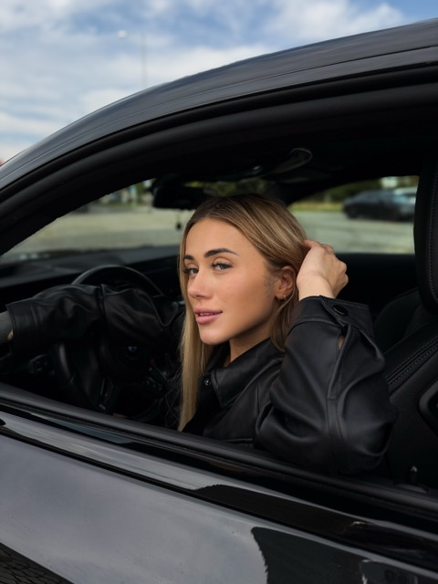

Kris
Vítej v mé soukromé zóně. Zde začíná ta pravá zábava.
Něco málo o mně
Jsem Kris, tvůrkyně, která miluje posouvání hranic a sdílení své nejautentičtější stránky. Na mé stránce najdeš exkluzivní obsah, který jinde neuvidíš. Pojďme se bavit!

Co na tebe čeká?
- Denně nové fotky a videa v HD kvalitě.
- Přímý chat se mnou – odpovídám na všechny zprávy.
- Možnost objednat si obsah na míru přesně pro tebe.
- Exkluzivní živé přenosy pouze pro členy.